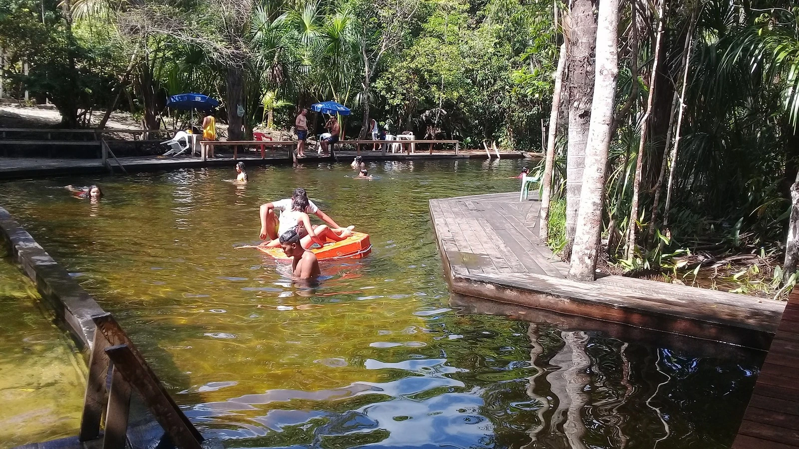
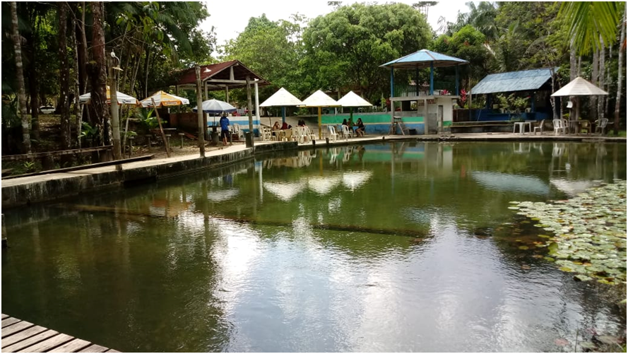
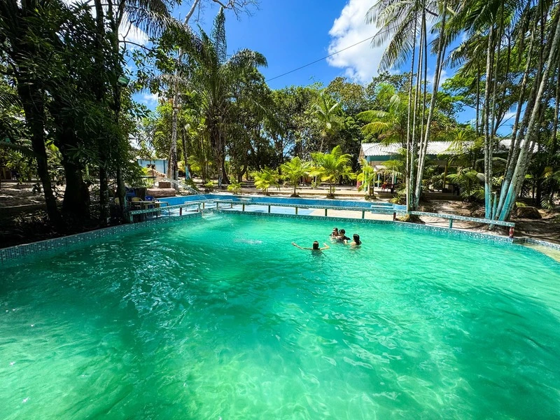

Águas Verdes

Coca-Cola

Rio Manga

Para pra ver

Quem te dera

Riacho Doce
Águas Verdes
Balneário Águas Verdes, situado na comunidade do Simôa, 30 km do centro de Curuçá. A taxa para entrada é de R$ 10,00 por pessoa. Proibido a entrada com bebidas e som automotivo.
Coca-Cola
Balneário Coca Cola, situado na comunidade do km 58, fica cerca de 5 km do centro de Curuçá. O igarapé de água avermelhada é muito visitado nos finais de semana. Balneário aberto ao público.
Rio Manga
O Balneário do Manga tem sua água escura e fica localizado no Bairro Rodoviário, há 1 km do centro de Curuçá. A taxa para entrada é de R$ 5,00 por pessoa.
Para pra ver
Balneário Parar pra ver, fica situado no Bairro Rodoviário, aproximadamente 1 km do centro de Curuçá. A taxa para entrada é de R$ 5,00 por pessoa.
Quem te dera
O Balneário fica situado na comunidade de Pedras Grandes, há 5 km do centro de Curuçá. Precisa fazer a travessia de barco para chegar ate o igarapé.
Riacho Doce
Balneário Riacho Doce, situado na estrada da Vila de Murajá, aproximadamente 10 km do centro de Curuçá.